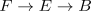

base space acts trivially on total space
Proposition
Let

be a fiber sequence in the category of Anima.
Then the action of $B$ on $E$ given by the action on fibers and postcomposition with $F -> E$ is constant.
Proof
follows from the Lurie theorem about colimits in Anima where
\begin{align*}
E \simeq \mathrm{colim}_B F
\end{align*}
where $B$ acts trivially on the (homotopy) orbits - here $E$